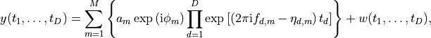
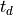
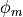
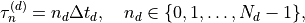
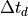
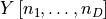
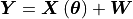

Theory Overview¶
Note
This page is work in progress.
On this page, I provide a brief overview of the goal of NMR-EsPy and how it attempts to achieve this. If you simply wish to use NMR-EsPy without worrying about the underlying theory, feel free to skip this.
The signal produced as a result of a typical NMR experiment (FID) can be
thought of as a summation of a number of complex exponentials, in
the presence of experimental noise. For the general case of a signal from a
 -dimensional NMR experiment, we expect the functional form of the
signal at any time during acquisition to be:
-dimensional NMR experiment, we expect the functional form of the
signal at any time during acquisition to be:

where
 is the time cosidered in the
 -th dimension
-th dimension is the number of complex exponentials (oscillators) contributing to the FID.
is the number of complex exponentials (oscillators) contributing to the FID. is the amplitude of oscillator
is the amplitude of oscillator 
 is the phase of oscillator
 is the frequency of oscillator in the
-th dimension
is the frequency of oscillator in the
-th dimension is the damping factor of oscillator in the
-th dimension
is the damping factor of oscillator in the
-th dimension is the contribution from experimental noise
is the contribution from experimental noise
Of course, NMR signals are digitised, and so the raw output of an experiment
will be a -dimensional array  of a finite
shape:
of a finite
shape:

where  is the number of points sampled in the -th
dimension. Assuming that the signal is uniformly sampled in each dimesnion,
the time at which any point is sampled is given by
is the number of points sampled in the -th
dimension. Assuming that the signal is uniformly sampled in each dimesnion,
the time at which any point is sampled is given by

where  is the sampling rate (the time between successive
samples) in dimension . The discrete fid
therefore has elements  of the form
![Y\left[n_1, \dots, n_D\right] = \sum_{m=1}^{M} \left\lbrace a_m
\exp\left(\mathrm{i} \phi_m\right) \prod_{d=1}^{D} \exp\left[\left(2 \pi
\mathrm{i} f_{d,m} - \eta_{d,m}\right) \tau_n^{(d)}\right]\right\rbrace
+ W(n_1, \dots, n_D)](_images/math/fec2ada75f3884620953f062e434d0a0caf8c1fd.png)
Writing this in a more succinct notation:

where the vector  cotains
all the deterministic parameters which describe the signal
cotains
all the deterministic parameters which describe the signal
![\boldsymbol{\theta} = \left[a_1, a_2, \dots, a_M, \phi_1, \dots, \phi_M,
f_{1,1}, \dots, f_{1,M}, \dots, f_{D,1}, \dots, f_{D,M}, \eta_{1,1}, \dots
\eta_{D,M}\right]^{\mathrm{T}}](_images/math/a0fcb2f262870247fb718bc0332125e1abe2beef.png)
The goal of NMR-EsPy is to estimate  for a given
signal. This is rather challenging, especially for signals with many resonances,
as one doesn’t even know how many oscilltors are contained within the signal in
general ().
for a given
signal. This is rather challenging, especially for signals with many resonances,
as one doesn’t even know how many oscilltors are contained within the signal in
general ().
To estimate , we apply Newton’s Method, an
iterative procedure which attempts to locate extrema of functions.
In the case of NMR-EsPy, we wish to minimise the following:

where  . This is a very commonly encountered function in the context of
optimisation, called the
residual sum of squares.
There are numerous variants of Newton’s method, but the general idea
is to approximate the neighbourhood of
. This is a very commonly encountered function in the context of
optimisation, called the
residual sum of squares.
There are numerous variants of Newton’s method, but the general idea
is to approximate the neighbourhood of  about the current value of as quadratic, and to
determine a step with a certain direction and size such that
is reduced. This procedure is iterated
until the routine converges to a minimum in the function.
about the current value of as quadratic, and to
determine a step with a certain direction and size such that
is reduced. This procedure is iterated
until the routine converges to a minimum in the function.